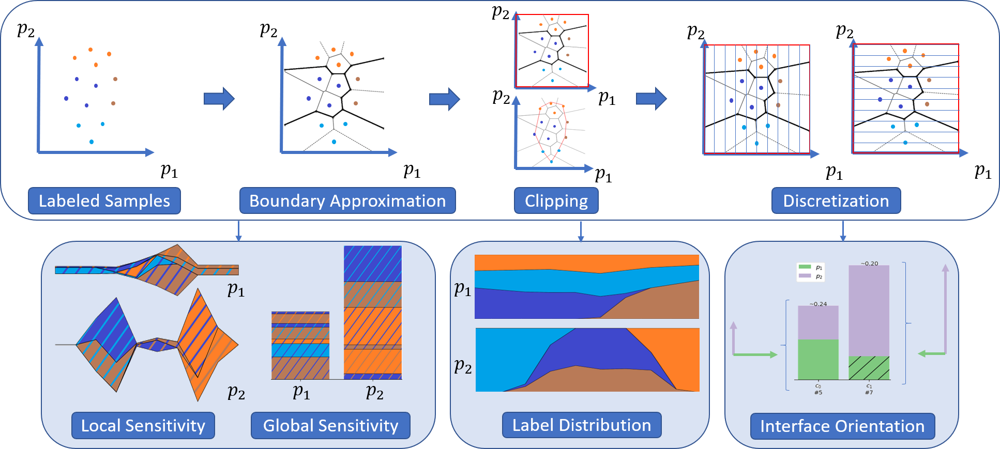

Voronoi Cell Interface-Based Parameter Sensitivity Analysis for Labeled Samples

Venue. CGF (2025)
Abstract. Abstract Varying the input parameters of simulations or experiments often leads to different classes of results. Parameter sensitivity analysis in this context includes estimating the sensitivity to the individual parameters, that is, to understand which parameters contribute most to changes in output classifications and for which parameter ranges these occur. We propose a novel visual parameter sensitivity analysis approach based on Voronoi cell interfaces between the sample points in the parameter space to tackle the problem. The Voronoi diagram of the sample points in the parameter space is first calculated. We then extract Voronoi cell interfaces which we use to quantify the sensitivity to parameters, considering the class label information of each sample's corresponding output. Multiple visual encodings are then utilized to represent the cell interface transitions and class label distribution, including stacked graphs for local parameter sensitivity. We evaluate the approach's expressiveness and usefulness with case studies for synthetic and real-world datasets.
Acknowledgements. Funded by Deutsche Forschungsgemeinschaft (DFG, German Research Foundation) under Germany's Excellence Strategy - EXC 2075 - 390740016, Project 327154368 - SFB 1313 (D01), and Project 251654672 – TRR 161 (A01, A08). We acknowledge the support of the Stuttgart Center for Simulation Science (SimTech). Open Access funding enabled and organized by Projekt DEAL.
© 2025 The Author(s). Computer Graphics Forum published by Eurographics - The European Association for Computer Graphics and John Wiley & Sons Ltd. This is an open access article under the terms of the Creative Commons Attribution License, which permits use, distribution and reproduction in any medium, provided the original work is properly cited.
Link to this page: